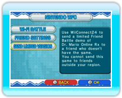
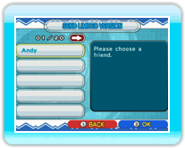
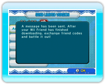
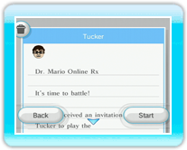

19 |
Sending the Demo Version (Dr. Mario) |
 |
|
You can send a demo version of the game to friends who have not purchased Dr. Mario Online Rx. Before sending, make sure WiiConnect24 is set up properly (see page 18). Notes: The demo version can only be used to play online friend battles. Also, when using the demo version, one person must have the original version. If both players have demo versions, the game will not be playable. You will need your own friend code to send the version. You can check your friend code by navigating to the Nintendo WFC menu in Dr. Mario, selecting Friend Settings, and then selecting Confirm Friend Code. ● Sending the Demo

Go to the Nintendo WFC menu and select Send Limited Version.

When your Wii Friend roster is displayed, choose the friend you wish to send the demo to.

After the demo has been sent, a confirmation will be displayed. Note: Only friends in the same region as you are can receive the demo. 
● Receiving the Game Notes: Only the person who has the original version of Dr. Mario Online Rx can choose to Invite a Friend. Settings and results will not be saved. |
 |
 |